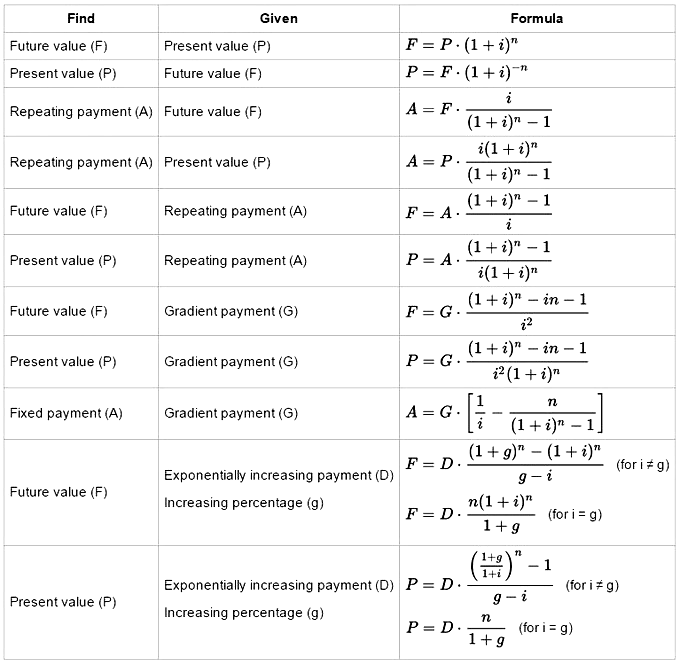
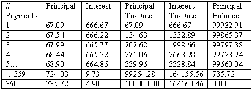
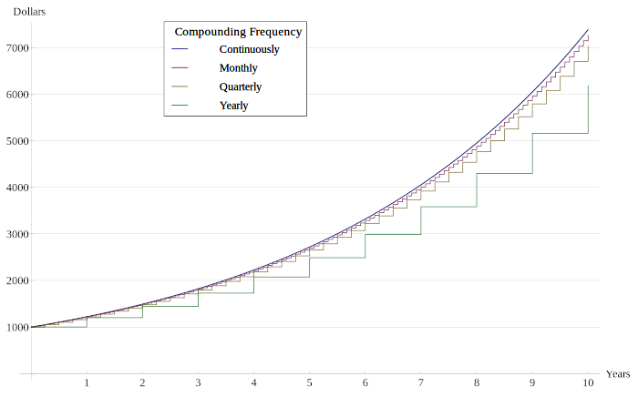
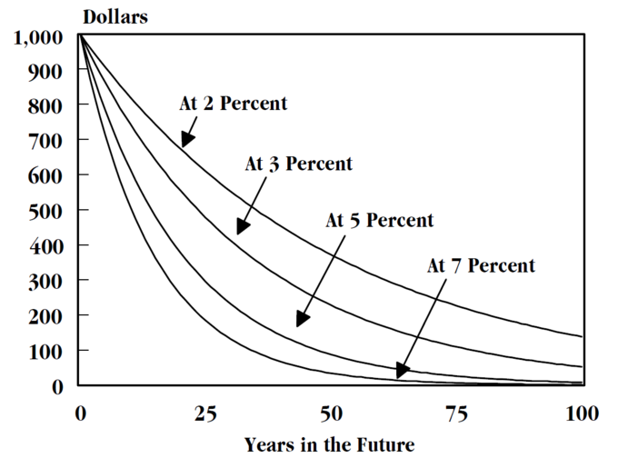

Time value of money is integral in making the best use of a financial player's limited funds.
Describe why the time value of money is important when analyzing a potential project
The time value of money is a concept integral to all parts of business. A business does not want to know just what an investment is worth todayit wants to know the total value of the investment. What is the investment worth in total? Let's take a look at a couple of examples.
Suppose you are one of the lucky people to win the lottery. You are given two options on how to receive the money.
In option 1, you get \$5,000,000 and in option 2 you get \$6,000,000. Option 2 may seem like the better bet because you get an extra \$1,000,000, but the time value of money theory says that since some of the money is paid to you in the future, it is worth less. By figuring out how much option 2 is worth today (through a process called discounting), you'll be able to make an apples-to-apples comparison between the two options. If option 2 turns out to be worth less than \$5,000,000 today, you should choose option 1, or vice versa.
Let's look at another example. Suppose you go to the bank and deposit \$100. Bank 1 says that if you promise not to withdraw the money for 5 years, they'll pay you an interest rate of 5% a year. Before you sign up, consider that there is a cost to you for not having access to your money for 5 years. At the end of 5 years, Bank 1 will give you back \$128. But you also know that you can go to Bank 2 and get a guaranteed 6% interest rate, so your money is actually worth 6% a year for every year you don't have it. Converting our present cash worth into future value using the two different interest rates offered by Banks 1 and 2, we see that putting our money in Bank 1 gives us roughly \$128 in 5 years, while Bank 2's interest rate gives \$134. Between these two options, Bank 2 is the better deal for maximizing future value.
In this formula, your deposit (\$100) is PV, i is the interest rate (5% for Bank 1, 6% for Bank 2), t is time (5 years), and FV is the future value.
The Time Value of Money is the concept that money is worth more today that it is in the future.
Identify the variables that are used to calculate the time value of money
One of the most fundamental concepts in finance is the Time Value of Money. It states that money today is worth more than money in the future.
Imagine you are lucky enough to have someone come up to you and say "I want to give you \$500. You can either have \$500 right now, or I can give you \$500 in a year. What would you prefer? " Presumably, you would ask to have the \$500 right now. If you took the money now, you could use it to buy a TV. If you chose to take the money in one year, you could still use it to buy the same TV, but there is a cost. The TV might not be for sale, inflation may mean that the TV now costs \$600, or simply, you would have to wait a year to do so and should be paid for having to wait. Since there's no cost to taking the money now, you might as well take it.
There is some value, however, that you could be paid in one year that would be worth the same to you as \$500 today. Say it's \$550- you are completely indifferent between taking \$500 today and \$550 next year because even if you had to wait a year to get your money, you think \$50 is worth waiting.
In finance, there are special names for each of these numbers to help ensure that everyone is talking about the same thing. The \$500 you get today is called the Present Value (PV). This is what the money is worth right now. The \$550 is called the Future Value (FV). This is what \$500 today is worth after the time period (t)- one year in this example. In this example money with a PV of \$500 has a FV of \$550. The rate that you must be paid per year in order to not have the money is called an Interest Rate (i or r).
All four of the variables (PV, FV, r, and t) are tied together in the equation in . Don't worry if this seems confusing; the concept will be explored in more depth later.
Simple interest is when interest is only paid on the amount you originally invested (the principal). You don't earn interest on interest you previously earned.
Multi-period investments take place over more than one period (usually multiple years). They can either accrue simple or compound interest.
Calculate the future value of a multi-period investment with simple and complex interest rates
There are two primary ways of determining how much an investment will be worth in the future if the time frame is more than one period.
The first concept of accruing (or earning) interest is called "simple interest. " Simple interest means that you earn interest only on the principal. Your total balance will go up each period, because you earn interest each period, but the interest is paid only on the amount you originally borrowed/deposited. Simple interest is expressed through the formula in.
Simple interest is when interest is only paid on the amount you originally invested (the principal). You don't earn interest on interest you previously earned.
Suppose you make a deposit of \$100 in the bank and earn 5% interest per year. After one year, you earn 5% interest, or \$5, bringing your total balance to \$105. One more year passes, and it's time to accrue more interest. Since simple interest is paid only on your principal (\$100), you earn 5% of \$100, not 5% of \$105. That means you earn another \$5 in the second year, and will earn \$5 for every year of the investment. In simple interest, you earn interest based on the original deposit amount, not the account balance.
The second way of accruing interest is called "compound interest. " In this case, interest is paid at the end of each period based on the balance in the account. In simple interest, it is only how much the principal is that matters. In compound interest, it is what the balance is that matters. Compound interest is named as such because the interest compounds: Interest is paid on interest. The formula for compound interest is.
Interest is paid at the total amount in the account, which may include interest earned in previous periods.
Suppose you make the same \$100 deposit into a bank account that pays 5%, but this time, the interest is compounded. After the first year, you will again have \$105. At the end of the second year, you also earn 5%, but it's 5% of your balance, or \$105. You earn \$5.25 in interest in the second year, bringing your balance to \$110.25. In the third year, you earn interest of 5% of your balance, or \$110.25. You earn \$5.51 in interest bringing your total to \$115.76.
Compare compound interest to simple interest. Simple interest earns you 5% of your principal each year, or \$5 a year. Your balance will go up linearly each year. Compound interest earns you \$5 in the first year, \$5.25 in the second, a little more in the third, and so on. Your balance will go up exponentially.
Simple interest is rarely used compared to compound interest, but it's good to know both types.
Calculating FV is a matter of identifying PV, i (or r), and t (or n), and then plugging them into the compound or simple interest formula.
Describe the difference between compounding interest and simple interest
The method of calculating future value for a single amount is relatively straightforward; it's just a matter of plugging numbers into an equation. The tough part is correctly identifying what information needs to be plugged in.
As previously discussed, there are four things that you need to know in order to find the FV:
Let's take one complex problem as an example:
On June 1, 2014, you will take out a \$5000 loan for 8-years. The loan accrues interest at a rate of 3% per quarter. On January 1, 2015, you will take out another \$5000, eight-year loan, with this one accruing 5% interest per year. The loan accrues interest on the principal only. What is the total future value of your loans on December 31, 2017?
First, the question is really two questions: What is the value of the first loan in 2017, and what is the value of the second in 2017? Once both values are found, simply add them together.
Let's talk about the first loan first. The present value is \$5,000 on June 1, 2014. It is possible to find the value of the loan today, and then find it's value in 2017, but since the value is the same in 2017, it's okay to just imagine it is 2014 today. Next, we need to identify the interest rate. The problem says it's 3% per quarter, or 3% every three months. Since the problem doesn't say otherwise, we assume that the interest on this loan is compounded. That means we will use the formula in . Finally, we need to identify the number of periods. There are two and a half years between the inception of the loan and when we need the FV. But recall that the interest rate and periods must be in the same units. That means that the interest must either be converted to % per year, or one period must be one quarter. Let's take one period to be one quarter. That means there are 10 periods. Please note that we don't really care when the loan ends in this problem–we only care about the value of the loan on December 31, 2017.
Interest is paid at the total amount in the account, which may include interest earned in previous periods.
Next, we simply plug the numbers into . PV=5000, i=.03, and t=10. That gives us a FV of \$6,719.58.
Now let's find the value of the second loan at December 31, 2017. Again, PV=\$5000, but this time, pretend it is January 1, 2015. This time, the interest is 5% per year and it is explicitly stated to be simple interest. That means we use the formula in . January 31, 2017 is exactly two years from the January 1, 2015 and since the interest is measured per year, we can set t=2 years.
When we plug all of those numbers into , we find that FV=\$5,500.00
Simple interest is when interest is only paid on the amount you originally invested (the principal). You don't earn interest on interest you previously earned.
Since the problem asks for the total FV of the loans, we add \$6,719.58 to \$5,500.00, and get a total value of \$12,219.58
The Future Value can be calculated by knowing the present value, interest rate, and number of periods, and plugging them into an equation.
Distinguish between calculating future value with simple interest and with compound interest
When calculating a future value (FV), you are calculating how much a given amount of money today will be worth some time in the future. In order to calculate the FV, the other three variables (present value, interest rate, and number of periods) must be known. Recall that the interest rate is represented by either r or i, and the number of periods is represented by either t or n. It is also important to remember that the interest rate and the periods must be in the same units. That is, if the interest rate is 5% per year, one period is one year. However, if the interest rate is 5% per month, t or n must reflect the number of periods in terms of months.
What is the FV of a \$500, 10-year loan with 7% annual interest?
In this case, the PV is \$500, t is 10 years, and i is 7% per year. The next step is to plug these numbers into an equation. But recall that there are two different formulas for the two different types of interest, simple interest and compound interest . If the problem doesn't specify how the interest is accrued, assume it is compound interest, at least for business problems.
Interest is paid at the total amount in the account, which may include interest earned in previous periods.
Simple interest is when interest is only paid on the amount you originally invested (the principal). You don't earn interest on interest you previously earned.
So from the formula, we see that FV=PV(1+i)t so FV=500(1+.07)10. Therefore, FV=\$983.58.
In practical terms, you just calculated how much your loan will be in 10 years. This assumes that you don't need to make any payments during the 10 years, and that the interest compounds. Unless the problem states otherwise, it is safe to make these assumptions - you will be told if there are payments during the 10 year period or if it is simple interest.
Suppose we want to again find the future value of a \$500, 10-year loan, but with an interest rate of 1% per month. In order to get our total number of periods (t), we would multiply 12 months by 10 years, which equals 120 periods. Therefore:
FV=500(1+.01)120
FV=\$1,650.19
Since the number of periods (n or t) is one, FV=PV(1+i), where i is the interest rate.
Calculate the future value of a single-period investment
The amount of time between the present and future is called the number of periods. A period is a general block of time. Usually, a period is one year. The number of periods can be represented as either t or n.
Suppose you're making an investment, such as depositing your money in a bank. If you plan on leaving the money there for one year, you're making a single-period investment. Any investment for more than one year is called a multi-period investment.
Let's go through an example of a single-period investment. As you know, if you know three of the following four values, you can solve for the fourth:
In a single-period, there is only one formula you need to know: FV=PV(1+i). The full formulas, which we will be addressing later, are as follows:
Compound interest: $FV = PV \cdot (1+i)^t$ .
Simple interest: $FV=PV \cdot (1+rt)$
We will address these later, but note that when $t=1$ both formulas become \$FV = PV \cdot (1+i)\$.
For example, suppose you deposit \$100 into a bank account that pays 3% interest. What is the balance in your account after one year?
In this case, your PV is \$100 and your interest is 3%. You want to know the value of your investment in the future, so you're solving for FV. Since this is a single-period investment, t (or n) is 1. Plugging the numbers into the formula, you get FV=100(1+.03) so FV=100(1.03) so FV=103. Your balance will be \$103 in one year.
Understanding the relationship between each variable and the broader concept of the time value of money enables simple valuation calculations of annuities.
Calculate the present or future value of various annuities based on the information given
To understand how to calculate an annuity, it's useful to understand the variables that impact the calculation. An annuity is essentially a loan, a multi-period investment that is paid back over a fixed (or perpetual, in the case of a perpetuity) period of time. The amount paid back over time is relative to the amount of time it takes to pay it back, the interest rate being applied, and the principal (when creating the annuity, this is the present value).
Generally speaking, annuities and perpetuities will have consistent payments over time. However, it is also an option to scale payments up or down, for various reasons.
This gives us six simple variables to use in our calculations:
With all of the inputs above at hand, it's fairly simply to value various types of annuities. Generally investors, lenders, and borrowers are interested in the present and future value of annuities.
The present value of an annuity can be calculated as follows:
For a growth annuity (where the payment amount changes at a predetermined rate over the life of the annuity), the present value can be calculated as follows:
The future value of an annuity can be determined using this equation:
In a situation where payments grow over time, the future value can be determined using this equation:
It is also possible to use existing information to solve for missing information. Which is to say, if you know interest and time, you can solve for the following (given the following):
This table is a useful way to view the calculation of annuities variables from a number of directions. Understanding how to manipulate the formula will underline the relationship between the variables, and provide some conceptual clarity as to what annuities are.
The PV of an annuity can be found by calculating the PV of each individual payment and then summing them up.
Calculate the present value of annuities
The Present Value (PV) of an annuity can be found by calculating the PV of each individual payment and then summing them up . As in the case of finding the Future Value (FV) of an annuity, it is important to note when each payment occurs. Annuities-due have payments at the beginning of each period, and ordinary annuities have them at the end.
Recall that the first payment of an annuity-due occurs at the start of the annuity, and the final payment occurs one period before the end. The PV of an annuity-due can be calculated as follows:
where $P$ is the size of the payment (sometimes $A$ or $pmt$ ), $i$ is the interest rate, and $n$ is the number of periods.
An ordinary annuity has annuity payments at the end of each period, so the formula is slightly different than for an annuity-due. An ordinary annuity has one full period before the first payment (so it must be discounted) and the last payment occurs at the termination of the annuity (so it must be discounted for one period more than the last period in an annuity-due). The formula is:
where, again, $P$ , $i$ , and $n$ are the size of the payment, the interest rate, and the number of periods, respectively.
Both annuities-due and ordinary annuities have a finite number of payments, so it is possible, though cumbersome, to find the PV for each period. For perpetuities, however, there are an infinite number of periods, so we need a formula to find the PV. The formula for calculating the PV is the size of each payment divided by the interest rate.
Suppose you have won a lottery that pays \$1,000 per month for the next 20 years. But, you prefer to have the entire amount now. If the interest rate is 8%, how much will you accept?
Consider for argument purposes that two people, Mr. Cash, and Mr. Credit, have won the same lottery of \$1,000 per month for the next 20 years. Now, Mr. Credit is happy with his \$1,000 monthly payment, but Mr. Cash wants to have the entire amount now. Our job is to determine how much Mr. Cash should get. We reason as follows: If Mr. Cash accepts x dollars, then the x dollars deposited at 8% for 20 years should yield the same amount as the \$1,000 monthly payments for 20 years. In other words, we are comparing the future values for both Mr. Cash and Mr. Credit, and we would like the future values to be equal.
Since Mr. Cash is receiving a lump sum of x dollars, its future value is given by the lump sum formula:
Since Mr. Credit is receiving a sequence of payments, or an annuity, of \$1,000 per month, its future value is given by the annuity formula:
The only way Mr. Cash will agree to the amount he receives is if these two future values are equal. So we set them equal and solve for the unknown:
The reader should also note that if Mr. Cash takes his lump sum of \$119,554.36 and invests it at 8% compounded monthly, he will have \$589,020.41 in 20 years.
Find the monthly payment for a car costing \$15,000 if the loan is amortized over five years at an interest rate of 9%.
Again, consider the following scenario: Two people, Mr. Cash and Mr. Credit, go to buy the same car that costs \$15,000. Mr. Cash pays cash and drives away, but Mr. Credit wants to make monthly payments for five years. Our job is to determine the amount of the monthly payment.
We reason as follows: If Mr. Credit pays x dollars per month, then the x dollar payment deposited each month at 9% for 5 years should yield the same amount as the \$15,000 lump sum deposited for 5 years. Again, we are comparing the future values for both Mr. Cash and Mr. Credit, and we would like them to be the same.
Since Mr. Cash is paying a lump sum of \$15,000, its future value is given by the lump sum formula:
Mr. Credit wishes to make a sequence of payments, or an annuity, of x dollars per month, and its future value is given by the annuity formula:
We set the two future amounts equal and solve for the unknown:
The future value of an annuity is the sum of the future values of all of the payments in the annuity.
Calculate the future value of different types of annuities
The future value of an annuity is the sum of the future values of all of the payments in the annuity. It is possible to take the FV of all cash flows and add them together, but this isn't really pragmatic if there are more than a couple of payments.
If you were to manually find the FV of all the payments, it would be important to be explicit about when the inception and termination of the annuity is. For an annuity-due, the payments occur at the beginning of each period, so the first payment is at the inception of the annuity, and the last one occurs one period before the termination.
For an ordinary annuity, however, the payments occur at the end of the period. This means the first payment is one period after the start of the annuity, and the last one occurs right at the end. There are different FV calculations for annuities due and ordinary annuities because of when the first and last payments occur.
There are some formulas to make calculating the FV of an annuity easier. For both of the formulas we will discuss, you need to know the payment amount (m, though often written as pmt or p), the interest rate of the account the payments are deposited in (r, though sometimes i), the number of periods per year (n), and the time frame in years (t).
The formula for an ordinary annuity is as follows:
where m is the payment amount, r is the interest rate, n is the number of periods per year, and t is the length of time in years.
In contrast, the formula for an annuity-due is as follows:
Provided you know m, r, n, and t, therefore, you can find the future value (FV) of an annuity.
An annuity is a type of investment in which regular payments are made over the course of multiple periods.
Classify the different types of annuity
An annuity is a type of multi-period investment where there is a certain principal deposited and then regular payments made over the course of the investment. The payments are all a fixed size. For example, a car loan may be an annuity: In order to get the car, you are given a loan to buy the car. In return you make an initial payment (down payment), and then payments each month of a fixed amount. There is still an interest rate implicitly charged in the loan. The sum of all the payments will be greater than the loan amount, just as with a regular loan, but the payment schedule is spread out over time.
Suppose you are the bank that makes the car loan. There are three advantages to making the loan an annuity. The first is that there is a regular, known cash flow. You know how much money you'll be getting from the loan and when you'll be getting them. The second is that it should be easier for the person you are loaning to to repay, because they are not expected to pay one large amount at once. The third reason why banks like to make annuity loans is that it helps them monitor the financial health of the debtor. If the debtor starts missing payments, the bank knows right away that there is a problem, and they could potentially amend the loan to make it better for both parties.
Similar advantages apply to the debtor. There are predictable payments, and paying smaller amounts over multiple periods may be advantageous over paying the whole loan plus interest and fees back at once.
Since annuities, by definition, extend over multiple periods, there are different types of annuities based on when in the period the payments are made. The three types are:
When borrowing money to be paid back via a number of installments over time, it is important to understand the time value of money and how to build an amortization schedule.
Understand amortization schedules
When lending money (or borrowing, depending on your perspective), it is common to have multiple payback periods over time (i.e. multiple, smaller cash flow installments to pay back the larger borrowed sum). In these situations, an amortization schedule will be created. This will determine how much will be paid back each period, and how many periods of repayment will be required to cover the principal balance. This must be agreed upon prior to the initial borrowing occurs, and signed by both parties.
Now if you add up all of the separate payments in an amortization schedule, you'll find the total exceeds the amount borrowed. This is because amortization schedules must take into account the time value of money. Time value of money is a fairly simple concept at it's core: a dollar today is worth more than a dollar tomorrow.
Why? Because capital can be invested, and those investments can yield returns. Lending your money to someone means incurring the opportunity cost of the other things you could do with that money. This gets even more drastic as the scale of capital increases, as the returns on capital over time are expressed in a percentage of the capital invested. Say you spend \$100 on some stock, and turn 10% on that investment. You now have \$110, a profit of \$10. Say instead of only a \$100, you put in \$10,000. Now you have \$11,000, a profit of \$1,000.
As a result of this calculation, amortization schedules charge interest over time as a percentage of the principal borrowed. The calculation will incorporate the number of payment periods (n), the principal (P), the amortization payment (A) and the interest rate (r).
To make this a bit more realistic, let's insert some numbers. Let's say you find a dream house, at the reasonable rate of \$100,000. Unfortunately, a bit of irresponsible borrowing in your past means you must pay 8% interest over a 30 year loan, which will be paid via a monthly amortization schedule (12 months x 30 years = 360 payments total). If you do the math, you should find yourself paying \$734 per month 360 times. 360 x 734 will leave you in the ballpark of \$264,000 in total repayment. that means you are paying more than 2.5 times as much for this house due to time value of money! This bit of knowledge is absolutely critical for personal financial decisions, as well as for high level business decisions.
This shows the first few installments in the example discussed above (i.e. borrowing \$100,000 at 8% interest paid monthly over 30 years).
The value of money and the balance of the account may be different when considering fractional time periods.
Calculate the future and present value of an account when a fraction of a compounding period has passed
Up to this point, we have implicitly assumed that the number of periods in question matches to a multiple of the compounding period. That means that the point in the future is also a point where interest accrues. But what happens if we are dealing with fractional time periods?
Compounding periods can be any length of time, and the length of the period affects the rate at which interest accrues.
The effect of earning 20% annual interest on an initial \$1,000 investment at various compounding frequencies.
Suppose the compounding period is one year, starting January1, 2012. If the problem asks you to find the value at June 1, 2014, there is a bit of a conundrum. The last time interest was actually paid was at January 1, 2014, but the time-value of money theory clearly suggests that it should be worth more in June than in January.
In the case of fractional time periods, the devil is in the details. The question could ask for the future value, present value, etc., or it could ask for the future balance, which have different answers.
If the problem asks for the future value (FV) or present value (PV), it doesn't really matter that you are dealing with a fractional time period. You can plug in a fractional time period to the appropriate equation to find the FV or PV. The reasoning behind this is that the interest rate in the equation isn't exactly the interest rate that is earned on the money. It is the same as that number, but more broadly, is the cost of not having the money for a time period. Since there is still a cost to not having the money for that fraction of a compounding period, the FV still rises.
The question could alternatively ask for the balance of the account. In this case, you need to find the amount of money that is actually in the account, so you round the number of periods down to the nearest whole number (assuming one period is the same as a compounding period; if not, round down to the nearest compounding period). Even if interest compounds every period, and you are asked to find the balance at the 6.9999th period, you need to round down to 6. The last time the account actually accrued interest was at period 6; the interest for period 7 has not yet been paid.
If the account accrues interest continuously, there is no problem: there can't be a fractional time period, so the balance of the account is always exactly the value of the money.
Present value (PV) and future value (FV) measure how much the value of money has changed over time.
Discuss the relationship between present value and future value
The future value (FV) measures the nominal future sum of money that a given sum of money is "worth" at a specified time in the future assuming a certain interest rate, or more generally, rate of return. The FV is calculated by multiplying the present value by the accumulation function. The value does not include corrections for inflation or other factors that affect the true value of money in the future. The process of finding the FV is often called capitalization.
On the other hand, the present value (PV) is the value on a given date of a payment or series of payments made at other times. The process of finding the PV from the FV is called discounting.
PV and FV are related , which reflects compounding interest (simple interest has n multiplied by i, instead of as the exponent). Since it's really rare to use simple interest, this formula is the important one.
The PV and FV are directly related.
PV and FV vary directly: when one increases, the other increases, assuming that the interest rate and number of periods remain constant.
The interest rate (or discount rate) and the number of periods are the two other variables that affect the FV and PV. The higher the interest rate, the lower the PV and the higher the FV. The same relationships apply for the number of periods. The more time that passes, or the more interest accrued per period, the higher the FV will be if the PV is constant, and vice versa.
The formula implicitly assumes that there is only a single payment. If there are multiple payments, the PV is the sum of the present values of each payment and the FV is the sum of the future values of each payment.
Variables, such as compounding, inflation, and the cost of capital must be considered before comparing interest rates.
Discuss the differences between effective interest rates, real interest rates, and cost of capital
The amount of interest you would have to pay on a loan or would earn on an investment is clearly an important consideration when making any financial decisions. However, it is not enough to simply compare the nominal values of two interest rates to see which is higher.
The reason why the nominal interest rate is only part of the story is due to compounding. Since interest compounds, the amount of interest actually accrued may be different than the nominal amount. The last section went through one method for finding the amount of interest that actually accrues: the Effective Annual Rate (EAR).
The EAR is a calculation that account for interest that compounds more than one time per year. It provides an annual interest rate that accounts for compounded interest during the year. If two investments are otherwise identical, you would naturally pick the one with the higher EAR, even if the nominal rate is lower.
Interest rates are charged for a number of reasons, but one is to ensure that the creditor lowers his or her exposure to inflation. Inflation causes a nominal amount of money in the present to have less purchasing power in the future. Expected inflation rates are an integral part of determining whether or not an interest rate is high enough for the creditor.
The Fisher Equation is a simple way of determining the real interest rate, or the interest rate accrued after accounting for inflation. To find the real interest rate, simply subtract the expected inflation rate from the nominal interest rate.
The nominal interest rate is approximately the sum of the real interest rate and inflation.
For example, suppose you have the option of choosing to invest in two companies. Company 1 will pay you 5% per year, but is in a country with an expected inflation rate of 4% per year. Company 2 will only pay 3% per year, but is in a country with an expected inflation of 1% per year. By the Fisher Equation, the real interest rates are 1% and 2% for Company 1 and Company 2, respectively. Thus, Company 2 is the better investment, even though Company 1 pays a higher nominal interest rate.
Another major consideration is whether or not the interest rate is higher than your cost of capital. The cost of capital is the rate of return that capital could be expected to earn in an alternative investment of equivalent risk. Many companies have a standard cost of capital that they use to determine whether or not an investment is worthwhile.
In theory, a company will never make an investment if the expected return on the investment is less than their cost of capital. Even if a 10% annual return sounds really nice, a company with a 13% cost of capital will not make that investment.
Finding the Effective Annual Rate (EAR) accounts for compounding during the year, and is easily adjusted to different period durations.
Calculate the present and future value of something that has different compounding periods
Sometimes, the units of the number of periods does not match the units in the interest rate. For example, the interest rate could be 12% compounded monthly, but one period is one year. Since the units have to be consistent to find the PV or FV, you could change one period to one month. But suppose you want to convert the interest rate into an annual rate. Since interest generally compounds, it is not as simple as multiplying 1% by 12 (1% compounded each month). This atom will discuss how to handle different compounding periods.
The effective annual rate (EAR) is a measurement of how much interest actually accrues per year if it compounds more than once per year. The EAR can be found through the formula in where i is the nominal interest rate and n is the number of times the interest compounds per year (for continuous compounding, see ). Once the EAR is solved, that becomes the interest rate that is used in any of the capitalization or discounting formulas.
The effective rate when interest compounds continuously.
The effective annual rate for interest that compounds more than once per year.
For example, if there is 8% interest that compounds quarterly, you plug .08 in for i and 4 in for n. That calculates an EAR of .0824 or 8.24%. You can think of it as 2% interest accruing every quarter, but since the interest compounds, the amount of interest that actually accrues is slightly more than 8%. If you wanted to find the FV of a sum of money, you would have to use 8.24% not 8%.
Solving for the EAR and then using that number as the effective interest rate in present and future value (PV/FV) calculations is demonstrated here. Luckily, it's possible to incorporate compounding periods into the standard time-value of money formula. The equation in is the same as the formulas we have used before, except with different notation. In this equation, A(t) corresponds to FV, A0 corresponds to Present Value, r is the nominal interest rate, n is the number of compounding periods per year, and t is the number of years.
Finding the FV (A(t)) given the PV (Ao), nominal interest rate (r), number of compounding periods per year (n), and number of years (t).
The equation follows the same logic as the standard formula. r/n is simply the nominal interest per compounding period, and nt represents the total number of compounding periods.
The last tricky part of using these formulas is figuring out how many periods there are. If PV, FV, and the interest rate are known, solving for the number of periods can be tricky because n is in the exponent. It makes solving for n manually messy. shows an easy way to solve for n. Remember that the units are important: the units on n must be consistent with the units of the interest rate (i).
This formula allows you to figure out how many periods are needed to achieve a certain future value, given a present value and an interest rate.
The present value of a perpetuity is simply the payment size divided by the interest rate and there is no future value.
Calculate the present value of a perpetuity
Perpetuities are a special type of annuity; a perpetuity is an annuity that has no end, or a stream of cash payments that continues forever. Essentially, they are ordinary annuities, but have no end date. There aren't many actual perpetuities, but the United Kingdom has issued them in the past.
Since there is no end date, the annuity formulas we have explored don't apply here. There is no end date, so there is no future value formula. To find the FV of a perpetuity would require setting a number of periods which would mean that the perpetuity up to that point can be treated as an ordinary annuity.
There is, however, a PV formula for perpetuities . The PV is simply the payment size (A) divided by the interest rate (r). Notice that there is no n, or number of periods. More accurately, is what results when you take the limit of the ordinary annuity PV formula as n → ∞.
It is also possible that an annuity has payments that grow at a certain rate per period. The rate at which the payments change is fittingly called the growth rate (g). The PV of a growing perpetuity is represented as $PVGP \ = \ {A \over ( i - g )}$ . It is essentially the same as in except that the growth rate is subtracted from the interest rate. Another way to think about it is that for a normal perpetuity, the growth rate is just 0, so the formula boils down to the payment size divided by r.
The yield of a single period investment is simply $\frac { \left( FV\quad -\quad PV \right) }{ PV } \ast 100%.$ .
Differentiate between the different methods of calculating yield of a single period investment
The yield on an investment is the amount of money that is returned to the owner at the end of the term. In short, it's how much you get back on your investment.
Naturally, this is a number that people care a lot about. The whole point of making an investment is to get a yield. There are a number of different ways to calculate an investment's yield, though. You may get slightly different numbers using different methods, so it's important to make sure that you use the same method when you are comparing yields. This section will address the yield calculation methods you are most likely to encounter, though there are many more.
The most basic type of yield calculation is the change-in-value calculation. This is simply the change in value (FV minus PV) divided by the PV times 100%. This calculation measures how different the FV is from the PV as a percentage of PV.
The percent change in value is the change in value from PV to FV (V2 to V1) divided by PV (V1) times 100%.
Another common way of calculating yield is to determine the Annual Percentage Rate, or APR. You may have heard of APR from ads for car loans or credit cards. These generally have monthly loans or fees, but if you want to get an idea of how much you will accrue in interest per year, you need to calculate an APR. Nominal APR is simply the interest rate multiplied by the number of payment periods per year. However, since interest compounds, nominal APR is not a very accurate measure of the amount of interest you actually accrue.
To find the effective APR, the actual amount of interest you would accrue per year, we use the Effective Annual Rate, or EAR.
The Effective Annual Rate is the amount of interest actually accrued per year based on the APR. n is the number of compounding periods of APR per year.
For example, you may see an ad that says you can get a car loan at an APR of 10% compounded monthly. That means that APR=.10 and n=12 (the APR compounds 12 times per year). That means the EAR is 10.47%.
The EAR is a form of the Annual Percentage Yield (APY). APY may also be calculated using interest rates other than APR, so a more general formula is in . The logic behind calculating APY is the same as that used when calculating EAR: we want to know how much you actually accrue in interest per year. Interest usually compounds, so there is a difference between the nominal interest rate (e.g. monthly interest times 12) and the effective interest rate.
The Annual Percentage Yield is a way or normalizing the nominal interest rate. Basically, it is a way to account for the time factor in order to get a more accurate number for the actual interest rate.inom is the nominal interest rate.N is the number of compounding periods per year.
The yield of an annuity is commonly found using either the percent change in the value from PV to FV, or the internal rate of return.
Calculate the yield of an annuity using the internal rate of return method
The yield of annuity can be calculated in similar ways to the yield for a single payment, but two methods are most common.
The first is the standard percentage-change method. Just as for a single payment, this method calculated the percentage difference between the FV and the PV. Since annuities include multiple payments over the lifetime of the investment, the PV (or V1 in is the present value of the entire investment, not just the first payment.
The second popular method is called the internal rate of return (IRR). The IRR is the interest rate (or discount rate) that causes the Net Present Value (NPV) of the annuity to equal 0. That means that the PV of the cash outflows equals the PV of the cash inflows. The higher the IRR, the more desirable is the investment. In theory, you should make investment with an IRR greater than the cost of capital.
Let's take an example investment: It is not technically an annuity because the payments vary, but still is a good example for how to find IRR:
Suppose you have a potential investment that would require you to make a \$4,000 investment today, but would return cash flows of \$1,200, \$1,410, \$1,875, and \$1,050 in the four successive years. This investment has an implicit rate of return, but you don't know what it is. You plug the numbers into the NPV formula and set NPV equal to 0. You then solve for r, which is your IRR (it's not easy to solve this problem by hand. You will likely need to use a business calculator or Excel). When r = 14.3%, NPV = 0, so therefore the IRR of the investment is 14.3%.
The setup to find the IRR of the investment with cash flows of -4000, 1200, 1410, 1875, and 1050. By setting NPV = 0 and solving for r, you can find the IRR of this investment.
The PV of multiple cash flows is simply the sum of the present values of each individual cash flow.
Calculate the present value of an investment portfolio that has multiple cash flows
The PV of multiple cash flows follows the same logic as the FV of multiple cash flows. The PV of multiple cash flows is simply the sum of the present values of each individual cash flow .
The PV of an investment is the sum of the present values of all its payments.
Each cash flow must be discounted to the same point in time. For example, you cannot sum the PV of two loans at the beginning of the loans if one starts in 2012 and one starts in 2014. If you want to find the PV in 2012, you need to discount the second loan an additional two years, even though it doesn't start until 2014.
The calculations get markedly simpler if the cash flows make up an annuity. In order to be an annuity (and use the formulas explained in the annuity module), the cash flows need to have three traits:
Things may get slightly messy if there are multiple annuities, and you need to discount them to a date before the beginning of the payments.
Suppose there are two sets of cash flows which you determine are both annuities. The first extends from 1/1/14 to 1/1/16, and the second extends from 1/1/15 to 1/1/17. You want to find the total PV of all the cash flows on 1/1/13.
The annuity formulas are good for determining the PV at the date of the inception of the annuity. That means that it's not enough to simply plug in the payment size, interest rate, and number of periods between 1/1/13 and the end of the annuities. If you do, that supposes that both annuities begin on 1/1/13, but neither do. Instead, you have to first find the PV of the first annuity on 1/1/14 and the second on 1/1/15 because that's when the annuities begin.
You now have two present values, but both are still in the future. You then can discount those present values as if they were single sums to 1/1/13.
Unfortunately, if the cash flows do not fit the characteristics of an annuity, there isn't a simple way to find the PV of multiple cash flows: each cash flow much be discounted and then all of the PVs must be summed together.
A corporation must decide whether to introduce a new product line. The new product will have start-up expenditures, operational expenditures, and then it will have associated incoming cash receipts (sales) and disbursements (Cash paid for materials, supplies, direct labor, maintenance, repairs, and direct overhead) over 12 years. This project will have an immediate (t=0) cash outflow of 100,000 (which might include all cash paid for the machinery, transportation-in and set-up expenditures, and initial employee training disbursements. ) The annual net cash flow (receipts less disbursements) from this new line for years 1-12 is forecast as follows: -54672, -39161, 3054, 7128, 25927, 28838, 46088, 77076, 46726, 76852, 132332, 166047, reflecting two years of running deficits as experience and sales are built up, with net cash receipts forecast positive after that. At the end of the 12 years it's estimated that the entire line becomes obsolete and its scrap value just covers all the removal and disposal expenditures. All values are after-tax, and the required rate of return is given to be 10%. (This also makes the simplifying assumption that the net cash received or paid is lumped into a single transaction occurring on the last day of each year. )
The present value (PV) can be calculated for each year:
T=0: $\frac{-100,000}{(1+0.10)^0}=100,000$
T=1: $\frac{-54672}{(1+0.10)^1}=-49701.81818$
T=2: $\frac{-39161}{(1+0.10)^2}=-32364.46281$
T=3: $\frac{3054}{(1+0.10)^3}=2294.515402$
T=4: $\frac{7128}{(1+0.10)^4}=4868.51991$
T=5: $\frac{25927}{(1+0.10)^5}=16098.62714$
T=6: $\frac{28838}{(1+0.10)^6}=16278.29919$
T=7: $\frac{46088}{(1+0.10)^7}=23650.43135$
T=8: $\frac{77076}{(1+0.10)^8}=35956.52284$
T=9: $\frac{46726}{(1+0.10)^9}=19816.38532$
T=10: $\frac{76852}{(1+0.10)^{10}}=29629.77288$
T=11: $\frac{132332}{(1+0.10)^{11}}=46381.55871$
T=12: $\frac{166047}{(1+0.10)^{12}}=52907.69139$
The sum of all these present values is the net present value, which equals 65,816.04. Since the NPV is greater than zero, it would be better to invest in the project than to do nothing, and the corporation should invest in this project if there is no alternative with a higher NPV.
To find the FV of multiple cash flows, sum the FV of each cash flow.
Calculate the Future Value of Multiple Annuities
Finding the future value (FV) of multiple cash flows means that there are more than one payment/investment, and a business wants to find the total FV at a certain point in time. These payments can have varying sizes, occur at varying times, and earn varying interest rates, but they all have a certain value at a specific time in the future.
The first step in finding the FV of multiple cash flows is to define when the future is. Once that is done, you can determine the FV of each cash flow using the formula in . Then, simply add all of the future values together.
The FV of multiple cash flows is the sum of the future values of each cash flow.
Manually calculating the FV of each cash flow and then summing them together can be a tedious process. If the cash flows are irregular, don't happen at regular intervals, or earn different interest rates, there isn't a special way to find the total FV.
However, if the cash flows do happen at regular intervals, are a fixed size, and earn a uniform interest rate, there is an easier way to find the total FV. Investments that have these three traits are called "annuities. "
There are formulas to find the FV of an annuity depending on some characteristics, such as whether the payments occur at the beginning or end of each period. There is a module that goes through exactly how to calculate the FV of annuities.
If the multiple cash flows are a part of an annuity, you're in luck; there is a simple way to find the FV. If the cash flows aren't uniform, don't occur at fixed intervals, or earn different interest rates, the only way to find the FV is do find the FV of each cash flow and then add them together.
Discounting is the procedure of finding what a future sum of money is worth today.
Describe what real world costs to the investor comprise an investment's interest rate
Another common name for finding present value (PV) is discounting. Discounting is the procedure of finding what a future sum of money is worth today. As you know from the previous sections, to find the PV of a payment you need to know the future value (FV), the number of time periods in question, and the interest rate. The interest rate, in this context, is more commonly called the discount rate.
The discount rate represents some cost (or group of costs) to the investor or creditor. The sum of these costs amounts to a percentage which becomes the interest rate (plus a small profit, sometimes). Here are some of the most significant costs from the investor/creditor's point of view:
All of these costs combine to determine the interest rate on an account, and that interest rate in turn is the rate at which the sum is discounted.
The PV and the discount rate are related through the same formula we have been using, $\frac { FV }{ [(1+i)]^n }$ .
If FV and n are held as constants, then as the discount rate (i) increases, PV decreases. PV and the discount rate, therefore, vary inversely, a fundamental relationship in finance. Suppose you expect \$1,000 dollars in one year's time (FV = \$1,000) . To determine the present value, you would need to discount it by some interest rate (i). If this discount rate were 5%, the \$1,000 in a year's time would be the equivalent of \$952.38 to you today (1000/[1.00 + 0.05]).
The number of periods corresponds to the number of times the interest is accrued.
Define what a period is in terms of present value calculations
In formula n represents the number of periods. A period is just a general term for a length of time. It can be anything- one month, one year, one decade- but it must be clearly defined and fixed. The length of one period must be the same at the beginning of an investment and at the end. It is also part of the units of the discount rate: if one period is one year, the discount rate must be defined as X% per year. If one period is one month, the discount rate must be X% per month.
The PV and FV are directly related.
The number of periods corresponds to the number of times the interest is accrued. In the case of simple interest the number of periods, t, is multiplied by their interest rate. This makes sense because if you earn \$30 of interest in the first period, you also earn \$30 of interest in the last period, so the total amount of interest earned is simple t x \$30.
Simple interest is rarely used in comparison to compound interest . In compound interest, the interest in one period is also paid on all interest accrued in previous periods. Therefore, there is an exponential relationship between PV and FV, which is reflected in (1+i)n .
For both forms of interest, the number of periods varies jointly with FV and inversely with PV. Logically, if more time passes between the present and the future, the FV must be higher or the PV lower (assuming the discount rate remains constant).
Calculating the present value (PV) is a matter of plugging FV, the interest rate, and the number of periods into an equation.
Distinguish between the formula used for calculating present value with simple interest and the formula used for present value with compound interest
Finding the present value (PV) of an amount of money is finding the amount of money today that is worth the same as an amount of money in the future, given a certain interest rate.
Calculating the present value (PV) of a single amount is a matter of combining all of the different parts we have already discussed. But first, you must determine whether the type of interest is simple or compound interest. If the interest is simple interest, you plug the numbers into the simple interest formula.
Simple interest is when interest is only paid on the amount you originally invested (the principal). You don't earn interest on interest you previously earned.
If it is compound interest, you can rearrange the compound interest formula to calculate the present value.
Finding the PV is a matter of plugging in for the three other variables.
Once you know these three variables, you can plug them into the appropriate equation. If the problem doesn't say otherwise, it's safe to assume the interest compounds. If you happen to be using a program like Excel, the interest is compounded in the PV formula. Simple interest is pretty rare.
One area where there is often a mistake is in defining the number of periods and the interest rate. They have to have consistent units, which may require some work. For example, interest is often listed as X% per year. The problem may talk about finding the PV 24 months before the FV, but the number of periods must be in years since the interest rate is listed per year. Therefore, n = 2. As long as the units are consistent, however, finding the PV is done by plug-and-chug.
Multi-period investments require an understanding of compound interest, incorporating the time value of money over time.
Calculate the return on a multi-period investment over time
When investing, the time value of money is a core concept investors simply cannot ignore. A dollar today is valued higher than a dollar tomorrow, and when utilizing the capital it is important to recognize the opportunity cost involved in what could have been invested in instead.
With single period investments, the concept of time value of money is relatively straightforward. The future value is simply the present value applied to the interest rate compounded one time. When comparing this to the opportunity costs involved, the rate of return of an alternative investment during the same time is similarly straightforward.
The variables involved in understanding the time value of money in these investments are:
With these variables, a single period investment could be calculated as follows:
't' in this equation would simply be 1, simplifying this equation to FV = PV(1+r).
With multi-periods in mind, interest begins to compound. Compound interest simple means that the interest from the first period is added to the future present value, and the interest rate the next time around is now being applied to a larger amount. This turns into an exponential calculation of interest, calculated as follows:
This means that the interest rate of a given period may not be the same percentage as the interest rate over multiple periods (in most situations). A useful tool at this point is a way to create an average rate of return over the life of the investment, which can be derived with the following:
All and all, the difference from a time value of money perspective between single and multiple period investments is relatively straightforward. Normalizing expected returns in present value terms (or projecting future returns over multiple time periods of compounding interest) paints a clearer and more accurate picture of the actual worth of a given investment opportunity.
Time value of money requires an understanding of how return rates impact fixed values over time.
When considering a single-period investment, n is one, so the PV is simply FV divided by 1+i.
Calculate the present value of a future, single-period payment
The time value of money framework says that money in the future is not worth as much as money in the present. Investors would prefer to have the money today because then they are able to spend it, save it, or invest it right now instead of having to wait to be able to use it.
The difference between what the money is worth today and what it will be worth at a point in the future can be quantified. The value of the money today is called the present value (PV), and the value of the money in the future is called the future value (FV). There is also a name for the cost of not having the money today: the interest rate or discount rate (i or r). For example, if the interest rate is 3% per year, it means that you would be willing to pay 3% of the money to have it one year sooner. The amount of time is also represented by a variable: the number of periods (n). One period could be any length of time, such as one day, one month, or one year, but it must be clearly defined, consistent with the time units in the interest rate, and constant throughout your calculations.
The FV is related to the PV by being i% more each period.
All of these variables are related through an equation that helps you find the PV of a single amount of money. That is, it tells you what a single payment is worth today, but not what a series of payments is worth today (that will come later). relates all of the variables together. In order to find the PV, you must know the FV, i, and n.
When considering a single-period investment, n is, by definition, one. That means that the PV is simply FV divided by 1+i. There is a cost to not having the money for one year, which is what the interest rate represents. Therefore, the PV is i% less than the FV.
{kind=link}
{kind=link}
{kind=link}
{kind=link}